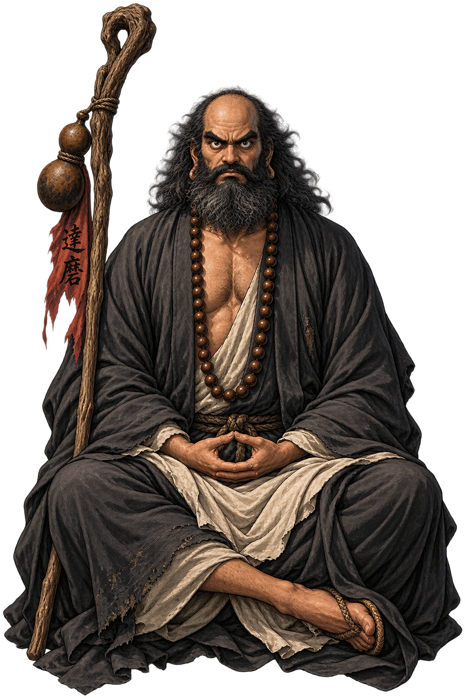

The Living Myth
Zen Patriarch, Wall-Gazer · The Dharma of Awakening, First Patriarch · Dharma of awakening

Stories of Bodhidharma
Bodhidharma’s mythology is a layer-cake of history and legend: the historical missionary of the early sixth century; the wall-gazer of the Zen records; the Shaolin temple’s patron of the martial arts; and Japan’s round Daruma doll, whose blank eyes you fill in when your wish comes true. The legend grew because the teaching needed a body — and the body it chose was defiant, foreign, and perfectly still.
The Zen records send him to the court of the Liang emperor Wudi — the great Buddhist patron who asks, ‘what is the highest meaning of the holy truth?’ and is told ‘vast emptiness, nothing holy’. The emperor, scandalized, asks who stands before him: ‘Don’t know’, says the future patriarch, and leaves for the north. The dialogue founded the Zen interview-style in a single exchange.
At Shaolin he sat facing a wall nine years; legend adds that in frustration at sleep he cut off his eyelids — and tea, the meditator’s ally, sprang from where they fell. Huike, his future successor, stood in the snow and cut off his own arm to prove his sincerity; Bodhidharma accepted him and transmitted the teaching. The tradition’s founding images are all of this order: resolve measured in what one will lose.
The legend that he taught the Shaolin monks exercises to strengthen their meditation — the seed of Shaolin kung fu — belongs to the later layers, but it fixed his place in the martial imagination: the first patriarch as the first master of body-discipline. The Yi Jin Jing muscle-classic attaches itself to his name.
Japan made him a doll: round as the wall-sitter’s robe, weighted to right itself — nanakorobi yaoki, fall seven times, rise eight. You paint one blank eye when you make a wish, the other when it comes true. The fierce Indian master ended as Japan’s most cheerful household god of perseverance, keeping his scowl and his self-righting bottom.
The Indian Prince Who Carried Zen to China
Bodhidharma is the First Patriarch of Zen: the Indian prince-turned-monk who crossed the Pamirs to China around 520 CE, sat facing a wall at Shaolin for nine years, and transmitted the Buddha’s wordless teaching outside the scriptures. His legend is the bridge between India and East Asia — and the seed of martial, meditative, and cultural traditions that span the continent.
Nine years facing the wall at Shaolin; the tradition’s image of unmoving resolve — and of the mind’s own wall.
The twenty-eighth Indian patriarch who became China’s first — the wordless transmission passed through him.
The legend: he cut off his eyelids in wrath at sleep — and where they fell, tea plants grew. Japan’s doll watches with one eye.
His only transmission: a bowl, a robe, and a bone — the mind-to-mind seal outside the scriptures.
From the original script to the living URL
菩提達磨
The name in its original Chinese form. Bodhidharma (菩提達磨) is attested in the source tradition — “Dharma of awakening”. Its original diacritics and script distinctions carry the full phonetic and orthographic weight of the source tradition.
bodhidharma
The plain bodhidharma form is identical to the Unicode restoration. Because this name is already written in Latin letters, no diacritics, stress, or script information were lost — only capitalization differs.
Bodhidharma
The Unicode restoration does not need to recover lost marks for Bodhidharma. Its value is canonical spelling and consistent cataloguing, not the reconstruction of erased orthography. The domain is readable as-is to both DNS and humanity.
Bodhidharma.com
This restoration is written entirely in ASCII letters — no Punycode encoding stands between Bodhidharma and the DNS. The domain reads identically to machines and to human eyes.
The attested spelling family of Bodhidharma
Bodhidharma
Restores 菩提達磨. The full Unicode restoration. bodhidharma.com is not in the PuniCodex collection — it is watched for release; if it drops, this temple upgrades to an owned flagship. Attested by Chan texts, Chinese Buddhist texts.
How Bodhidharma was spoken
How Bodhidharma is preserved in writing
A bespoke provenance study for Bodhidharma is being prepared by the PUNICODEX scholarly team.
Contribute scholarly provenance →The lore you have read is the living myth. Extended Lore opens the scholarly vault beneath it: the cult and its material remains, a history of the image, the name after antiquity, a meditation on what the name still means, and the full scholarly apparatus — etymology, orthography, sources.
Enter Extended Lore